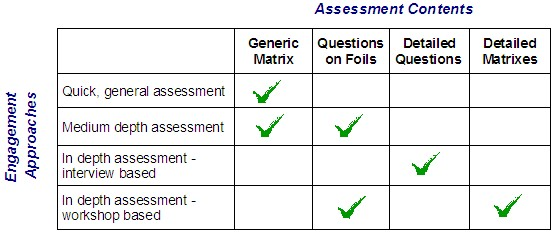

"Delivering Quality Service" by V. Zeithaml, A. Parasuraman and L. Berry.
Service Quality Model and Service Gap Analysis
The techniques used to create the IT Services Assessment reference the service quality model developed and documented
in "Delivering Quality Service" by V. Zeithaml, A. Parasuraman and L. Berry. This service quality
model is illustrated in the figure below.

Moments of Truth are the interactions between the customer and service provider. Through these service encounters or
moments of truth, customers evaluate service and service providers, and form their perceptions of the service
delivered.
A study of service quality from the customer’s perspective revealed common themes that cut across company and industry
boundaries. These themes, which offer critical clues for achieving effective service-quality control, are cast in the
form of four key discrepancies or gaps pertaining to perceptions of service quality. These four gaps are:
Gap 1: The discrepancy between customer's expectations and management's perceptions of those expectations.
In other words, not knowing what customers expect.
Gap 2: The discrepancy between management's perceptions of customer's expectations and service quality or
design specifications, i.e., the wrong service delivery standards.
Gap 3: The discrepancy between service quality or design specifications and actual service delivery, i.e.,
Service performance and quality is lacking.
Gap 4: The discrepancy between actual service delivery and what is communicated to customers about it, i.e.,
promises do not match delivery.
These four gaps are the major causes of the service quality gap that customers may perceive, i.e., Gap 5: The
difference between the expected and perceived service quality from the customer's standpoint.
The model portrays the provider’s and customer’s sides of the service - quality equation and the linkage between the
two. The conceptual model conveys a clear message to those wishing to improve quality of service. The key to closing
Gap 5 is to close Gaps 1 through 4 and keep them closed. To the extent that one or more of the Gaps 1 through 4 exist,
customers perceive service-quality shortfalls.
To understand the service gaps and for guidance on using the IT Service Assessment to uncover them, please refer to the
"IT Services Assessment Techniques" technique paper on the Enterprise Systems Management knowledge network
database.
|